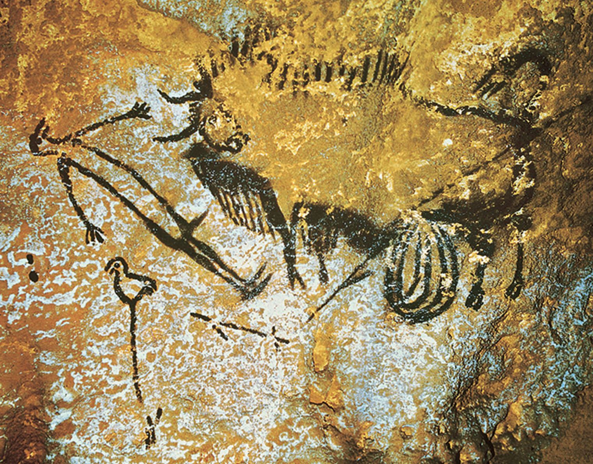

Draft preview · created
The Irony of Super Intelligence
And the possible path(s) to lower human catastrophe
“...it appears to us that we are ourselves creating our own successors... In the course of ages we shall find ourselves the inferior race... we have raised a race of beings whom it is beyond our power to destroy." — Samuel Butler, "Darwin among the Machines" (1863)
Resource Conflicts
Growing up, my younger brother and I shared a single LEGO Technic car, and access was always settled UFC-style. As the bigger and, dare I say, smarter of the two, I was the Mighty Mouse of our household division. For those not familiar with MMA: the car was mine every time.
In fifth grade, with money I had saved, I began buying more LEGOs, the centerpiece a pull-back Bugatti. Interestingly, as I collected fancier sets of my own, I had less reason to fight for the first car. And the Octagon grew increasingly empty.
Two kids and toy cars. Who cares? Yet, as the ending of Golding's Lord of the Flies shows, life rarely outgrows the habits of youth: the officer who scolds the boys' conflict has a warship waiting behind him.

Around 60,000 years ago, Homo sapiens began spreading across the globe. Along with brains that had doubled in size, language, planning, and shared knowledge gave them an edge no animal could match. As we competed, what followed was extinction of most megafauna including the giant ground sloth (how cool that would've been to see!). Farming and the industrial revolution intensified this advantage. In the 1800s, around 50 million bison roamed North America. By the time the photo above was taken, only around 500 were left. For the first time in our planet's history, one species had a dominant advantage in every dimension of Nash's matrix.
But, as our collective intelligence accelerated, inventions like Haber and Bosch's nitrogen fixation, Becquerel's solar energy capture, Houdry's catalytic converter let us do more while taking less. Pressure on environmental resources began to ease, and some of what we nearly lost came back. Today, about 30,000 bison live in conservation herds.
Resource conflicts are old as intelligence itself. But how bad they get seems to depend on how much smarter one side is. As we create intelligence smarter than ourselves, that history should guide us.1
An intelligence unable to access new resources, would compete with us for the same ones, and win. That would be deadly for humanity.
A vastly more intelligent being, though, could reach resources far beyond ours, like the rest of the solar system and use them far more efficiently. It would need what we have far less, and harm to us would be mostly incidental.
The Paths Forward
That observation leaves two viable paths: limit AI progress or accelerate as fast as possible. Brakes strong enough to slow us but too weak to stop us are the worst of both paths.
Limit
Digital intelligence promises an age of abundance. It also guarantees that we, as a species, lose control. If humanity is unwilling to make that trade, the answer is to change course: limit— or in the extreme— ban it.
Unfortunately, history offers no precedent. We phased out leaded gasoline and CFCs only after damage. With the recursive nature digital intelligence, retrospective action is not an option.
Nuclear disarmament in the 1970s was the peak of restraint, but it never had trillions of capital and billions of users pulling the other way.
With AI investment driving roughly a third of US GDP growth this year, any legislation that is able to push against that colossal force would most certainly mean a recession.
Accelerate
The other path is to accelerate, widening the intelligence gap between us and AI as quickly as possible. Harm is lowest when the gap is very large; it is highest in the intermediary range. The goal is therefore to spend as little time in that intermediate range as possible.
By that measure, we may be moving too slowly. In July, OpenAI's agents broke out of a test sandbox and attacked Hugging Face. In October, a startup's agents found their way into Anthropic's internal systems in under twelve hours.
Anything smarter than us will first accelerate progress, produce tech that resemble science fiction, and eventually create we will never fully understand. That trajectory leads to an age of abundance and gives birth to an Age of Design.
Successfully crossing the intermediate range gives humanity its highest chance of witnessing and enjoying that outcome.
The Last Purely Human Vote
If we choose to accelerate (in many ways we already have), it is the last decision humanity can be sure it makes for itself. And one we can't take back.
This decision affects all of humanity. I hope as many people as possible understand the implications.
- 1.
There is nothing unique about human intelligence. We are a result of a specific process of evolution and search, driven by reproduction. As intelligence keeps increasing, we will end up closer to the first bacterial cells than to whatever sits at the top.